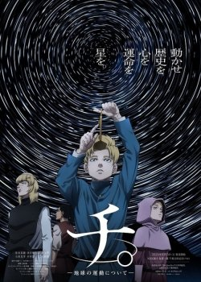
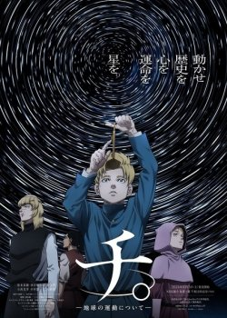

Действие аниме происходит в мире весьма похожем на средневековую феодальную Японию.
На территории страны в тайных местах скрыто несколько соперничающих школ-деревень, где готовят ниндзя/синоби.
Главный герой - колоритный и зажигательный парень по имени Наруто Узумаки (Сейю Дзюнко Такэути). Он живет в одной из таких деревень.
Когда он был маленьким, на деревню напал могучий демон - девятихвостый лис. Демона сумели победить, но его силу пришлось запечатать в ребенке, в Наруто.
С тех пор между Наруто, чьи родители погибли во время схватки, и остальными жителями деревни пролегла тень отчуждения и страха.
Его стали бояться и избегать, и только несколько человек относятся к нему хорошо. Разумеется Наруто не устраивает такое положение дел.
С этого и начинается его путь, путь ниндзя, желающего стать сильнейшим из всех Хокаге (лучших ниндзя деревни) и тем самым добиться всеобщего признания...

В мире, где человечество живет в постоянном страхе перед гигантскими существами, известными как титаны, история Эрена Йегера и его друзей полна драматизма и неожиданных поворотов.
С самого детства Эрен мечтал о свободе, но его мир рухнул, когда титаны ворвались в его родной город и убили его мать.
Этот трагический инцидент стал катализатором для Эрена, который поклялся уничтожить всех титанов и отомстить за свою семью.
Вступив в Разведкорпус, Эрен и его товарищи, Микаса и Армин, начинают свое путешествие, полностью меняющее их жизни.
Они сталкиваются с невероятными опасностями, открывают тайны, скрывающиеся за стенами, которые должны были защищать людей.
В процессе борьбы с титанами Эрен обнаруживает удивительную способность трансформироваться в одного из них, что делает его ценным активом в битве за выживание человечества.
Однако, эта сила также ставит под угрозу его самого и тех, кто его окружает.
Главный герой этой истории - парень в соломенной шляпе по имени Монки Д. Луффи. Все о чем мечтает наш герой - это приключения и путешествия.
Будучи маленьким ребенком, он съедает дьявольский фрукт и становится резиновым человеком. Теперь у него есть необычная способность - он может растягивать
свое тело и конечности до любых размеров. Сейчас перед Луффи стоит цель - стать главным среди пиратов. Но для этого, судя по легендам, необходимо добраться до
древнего сокровища Ван Пис. Когда-то сам Гол Д. Роджер спрятал его где-то на Гранд Лайн, течении, которое объединяет множество островов по всему миру.
Наш весельчак решает отправиться на их поиски.
Однако, наш персонаж далеко не единственный, кто охотится за золотом Роджера. Казалось бы, у нашего смышленого парня есть всё, для того чтобы стать
королем - необычайная сила и острый ум. Не хватает только одного - верной и преданной команды, которые последуют за своим капитаном навстречу любой опасности.
Вот только Луффи стоит поторопиться, ведь за Ван Пис идет целая ватага злобных пиратов, которая не остановится ни перед чем, чтобы добраться до
заветного сокровища. Монки придется предпринять немало усилий, чтобы опередить всех своих соперников.

Долгая и тяжелая битва наконец-то завершилась, зло оказывается уничтожено. Мадзин Бу повержен, а значит, на нашей планете наступил долгожданный мир.
Теперь его необходимо восстановить после тех разрушений, что были причинены. Чтобы люди смогли вернуться к нормальной жизни, Зет Воины уничтожают
всю информацию о войне из памяти жителей. Чи-Чи уговаривает Сон Гоку начать мирную жизнь и вернуться к работе на ферме. После долгих уговоров,
наш герой решает так и сделать, оставив свое оружие в надежное место.
Однако, Гоку принимает решение проявить осторожность, не забывая о своих тренировках, мало ли что может произойти в этом неспокойном мире.
И совсем не зря, ведь в это самое время пробуждается великий бог разрушения Бирус. Это не сулит ничего хорошего всякому, кто окажется на его пути.
Множество веков он находился во сне, а сейчас решает найти себе достойного соперника и сразится с ним. Он считает себя самых опасным и
сильным существом в мире и никто не сможет устоять перед ним. Эти поиски приводят к Сон Гоку, а значит, наша планета снова в опасности.
Из-за этого, о мирной жизни можно забыть, разрушительная война снова начинается. Но главный герой готов к битве, насколько бы сложной
и тяжелой она не была.

Сегодня почти каждый ребенок на планете рождается с необычными способностями. Именно об этом пойдет речь в данном аниме. Примерно девяносто девять процентов
населения обладают различными силами, от владения огня, до увеличения физической силы. Однако молодой мальчик – Изуку Мидории, самый обычный человек,
судьба обделила его, он не получил свои способности. Но его духу, может позавидовать любой герой, ведь он даже, несмотря на отсутствие в себе каких-либо
сил, всегда старается помочь другим, даже если это может нанести непоправим вред ему. Однако, в один из солнечных дней, юноша встречает сильнейшего в
Японии супер героя “Всемогущий” и случайным образом узнает его слабость. Изуку просит его об одной услуги, быть его учеником, чтобы поступить в
геройскую академию и помогать другим. Всемогущий видит в нем потенциал и решает принять его, став его наставником. Теперь У Мидории есть шанс
сделать что-то действительно важное в его жизни.